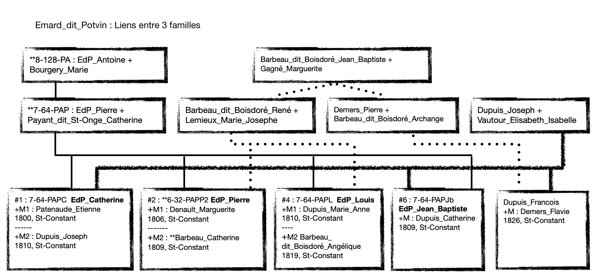

Plusieurs combinaisons de frères et soeurs d'une famille se marient avec frères et soeurs d'une même famille.
Voici quelques exemples
Enfants de Pierre+Catherine : Catherine, Pierre, Louis, Jean-Baptiste
Enfants de René+Marie_Josephe : Catherine, Angélique
Enfant de Pierre+Archange (soeur de René) : Flavie
Enfants de Joseph+Elisabeth-Isabelle : Joseph, Marie-Anne, Catherine, François
